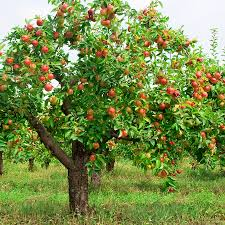

<!DOCTYPE html>
<html>
    <head>
        <title>
            Apple
        </title>
        <h1>
            Apple
        </h1>
        

    </head>
    <hr>
    <body>
        
        <p>
            Apple is an important temperate fruit suited
for growing in the high ranges of Kerala. Sloping sites to allow free drainage are considered
more suitable than level tops. The ideal soil
types are loam, sandy loam and silt loam with
open porous and well-drained subsoil.
        </p>

   <h2>Prepation of land</h2>
   <p>
    The planting distance in India varies from
    7-10 m, depending upon the vigour of plant.
    The pit should be of 1 m wide and 20 cm deep
    so that all roots may be accommodated in a
    well spread condition.
   </p>

<h2>Planting material</h2>
<p>
    Apples are ordinarily propagated by
budding or grafting on seedlings of Crab apple,
Yellow Newton or Golden Delicious. Winters
are best for whip grafting. Shield budding is
done in June with the season’s bud. Both whip
grafting and shield budding are widely practiced in India. Low chilling varieties are suitable for Kerala.
</p>

<h2>Time and method of planting</h2>
<p>
    Apples are planted in the ground free of
weeds. Regularly irrigated for about two years
in the beginning. Planting is done late in winter. For adequate root development a
temperature of 7o
C is considered ideal.
</p>

<h2>Pruning</h2>
<p>
    Pruning and training are important in apple
cultivation. One year old plants are cut back
at about 80-100 cm above ground. If branches
are present at this time, only 4 to 5 of them
ought to be retained and shortened in length.
No shoot is retained upto 50 cm from ground.
At the time of first dormant pruning, the main
scaffold branches are cut back to about half a
metre in length.
</p>
<p>
    Secondary branches arise from these main
limbs. Some of the new shoots arising early in
the second summer are rubbed off in
order to develop only a few vigorous secondary branches. During the second
dormant pruning, the crowded, misplaced or
diseased secondary branches are removed and
the extra vigorous ones headed back. This process is continued for 4 or 5 years, at the end of
which there are 8 to 10 scaffold branches.
</p>
<p>
    It is desirable to add 100-150 g of nitrogen
as sulphate of ammonia. Similar quantities of
phosphate and potash should be added when
required. Five quintals of bone meal and 10
quintals of wood ash per hectare are given
annually besides the fertilizers. Fertilizers should
be mixed with the soil at a radius of 1 m from
the plant.
</p>

<h2>Thinning of fruit</h2>
<p>
    Thinning of fruit is also practised in
order to improve fruit colour and fruit size. It
is desirable to retain one fruit for every
40 leaves. This spaces the fruit at about
15-20 cm apart and there will be only one fruit
per spur.
</p>

<h2>Harvesting</h2>
<p>
    Much of the success in apple production
depends on proper picking, storage and
disposal. When a fruit separates easily from
the spur, firmness of flesh and taste are
desirable. The harvested fruits may be stored
for 120-150 days at 4-5o
C, provided there is
good circulation of air.
</p>

    </body>
</html>